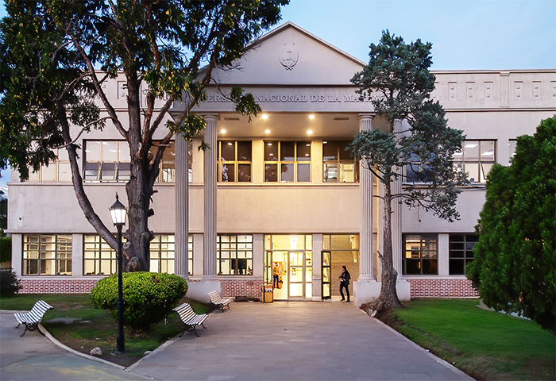
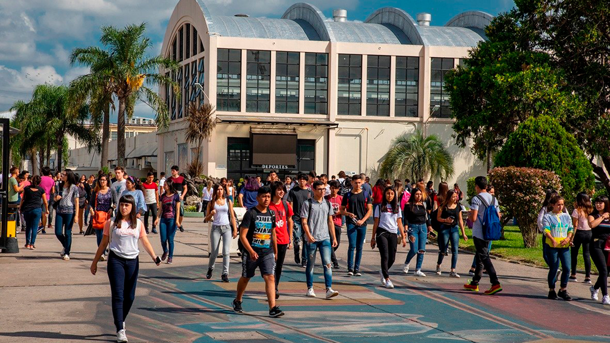
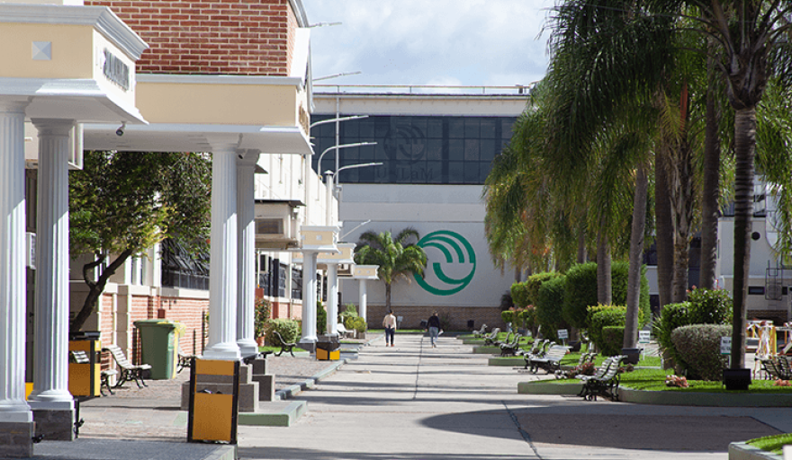

Universidad Nacional de La Matanza
Carrera: Tecnicatura Universitaria en Desarrollo Web
Competencias academicas adquiridas
Como técnico desarrollador web adquirí competencias en la construcción de interfaces de usuario con HTML, CSS y JavaScript aplicando diseño responsivo y buenas prácticas de UX, así como en el desarrollo backend y gestión de bases de datos para garantizar el correcto flujo y almacenamiento de la información. También desarrollé habilidades en el uso de herramientas de control de versiones como Git y GitHub para mantener proyectos organizados y trabajar de forma colaborativa, y consolidé una sólida capacidad de resolución de problemas y debugging para identificar y corregir errores optimizando el rendimiento de las aplicaciones.
Periodo
Fecha de Ingreso: Abril 2022
Fin de Curso: Diciembre 2025
Imagenes de la Universidad


